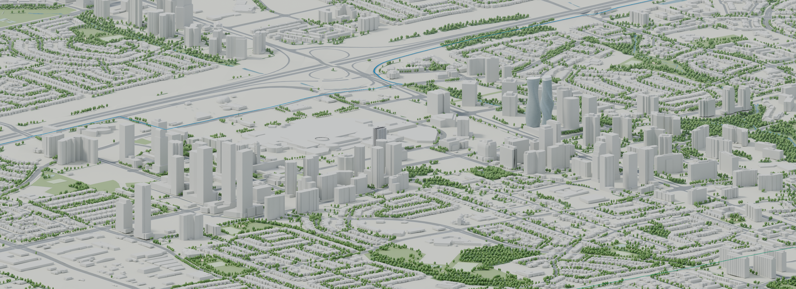
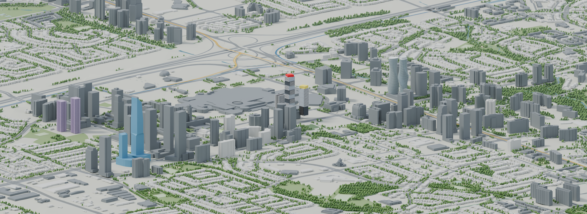
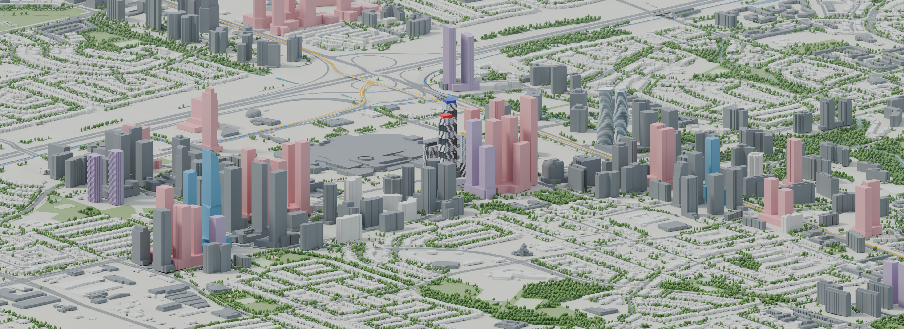
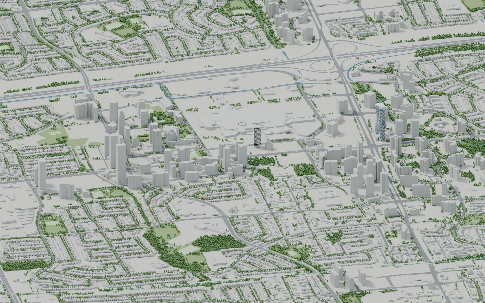
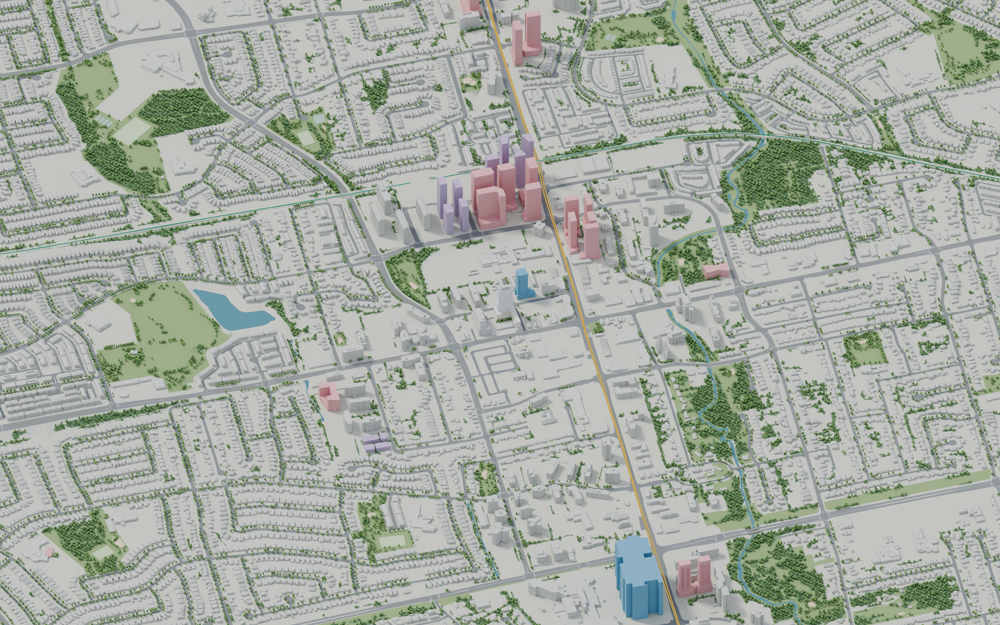

{kind=link}
{kind=link}
{kind=link}
The actual city
Thirty City model tiles provide the existing context and development massing. Roads, shoreline, parks and public tree positions come from municipal geographic data.
A VISUAL ATLAS · RESEARCH EDITION 2026
Mississauga’s next skyline, from the downtown core to the waterfront.
Explore the city through carefully composed 3D pictures, its neighbourhoods, and the projects changing them.
Explore the pictures ↓Downtown includes an approximate M3 upper form and crown, a plan-derived M4 envelope and an unverified M5 developer proxy. Exchange retains the City’s textures. The project evidence identifies each model’s limits.
NEIGHBOURHOOD BY NEIGHBOURHOOD
Move from the skyline to the street network, the shoreline and the spaces in between. Open any picture to explore it at full size.
ANOTHER PERSPECTIVE
Composed perspectives and close details, with softer light, mapped scenery and updated building models. Every picture opens at its original 4K resolution.
DOWNTOWN IN THREE LAYERS
Three views from one fixed camera: existing context, dated construction records, and retained development.



The middle view uses dated evidence: M4 is cut at the recorded Spring 2026 level; topped-out structures are shown where a supported model is available. Unmeasured progress is omitted. The future view includes planned envelopes. M3’s upper form and crown silhouette are approximate. Read the construction evidence for dates and limits.
WATCH THE LAYERS APPEAR
The same Downtown camera, moving through the three model layers.
THE SAME VIEW, A DIFFERENT SKYLINE
The camera stays fixed. Slide between existing context and the retained development scenario.

Drag the handle to compare. You can also focus it and use the arrow keys.
A comparison of model layers, not a prediction for a fixed completion year. Source capture dates vary. The project register records missing geometry and unresolved revisions.
THE CONNECTION THROUGH IT ALL
The Hazel McCallion Line runs through Port Credit, Cooksville and the downtown core toward the city’s northern neighbourhoods. Its gold alignment brings the changing city into focus.
The 18 km, 19-stop core project includes Brampton. The model is clipped to Mississauga; the separate downtown loop remains a planning and design project. Green GO and blue Transitway guides show the other connections. These continuous colour guides stay visible over buildings and crossings; they are route annotations.
Explore the corridor ↗
EVERY VIEW HAS A PAPER TRAIL
Municipal building geometry, dated planning material, construction updates and independent reporting sit behind the pictures.
Thirty City model tiles provide the existing context and development massing. Roads, shoreline, parks and public tree positions come from municipal geographic data.
Demonstrably superseded designs and duplicate towers are removed. Older proposals remain when cancellation has not been established. Unresolved source forms are shown in violet.
These are architectural model pictures. Some current forms are unavailable; reconstructed envelopes are identified. Public-tree coordinates come from the City inventory; additional woodland canopy, tree sizes and lighting are illustrative. Terrain uses Ontario elevation data, and the baseline is not a September 2026 survey.
KEEP EXPLORING